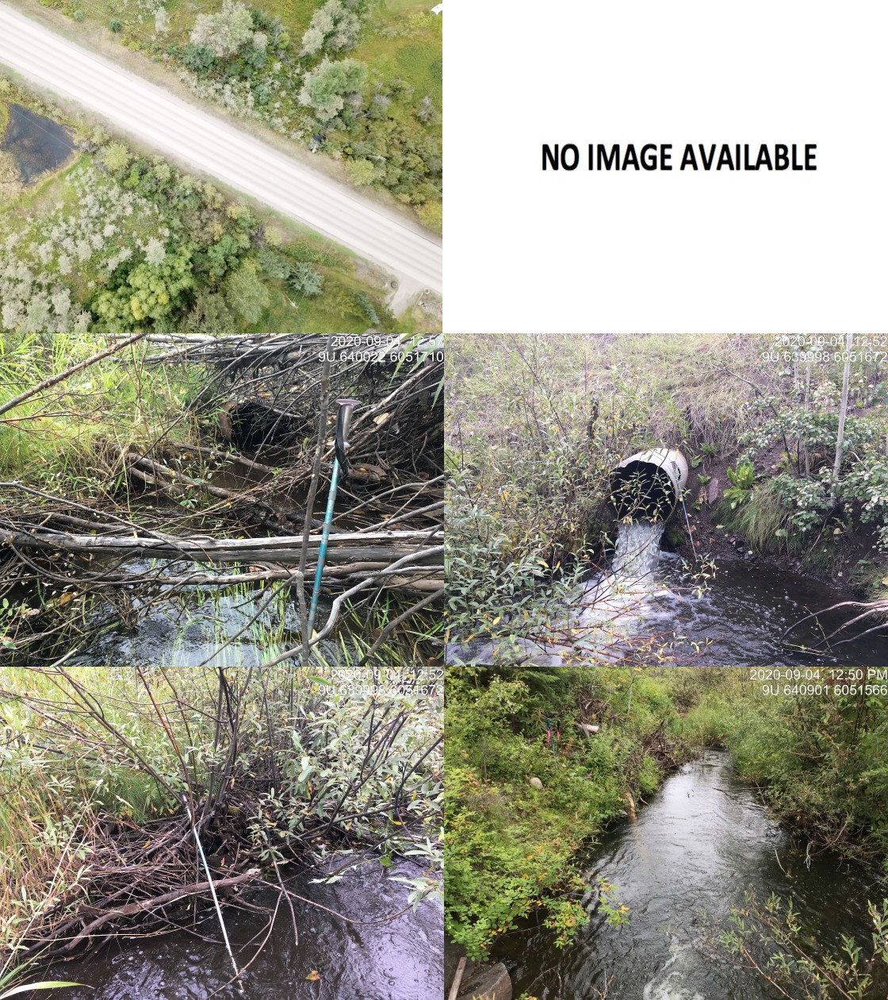
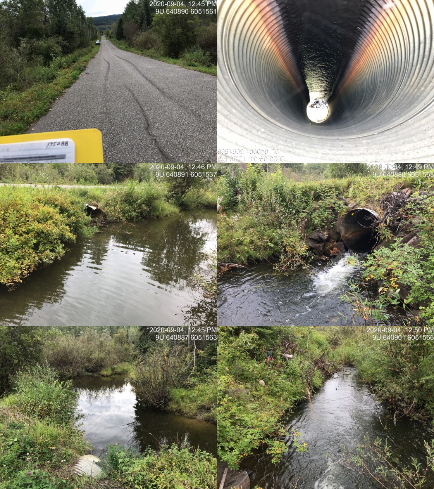

Appendix - 195290 & 195288 - Gibson Creek
Site Location
PSCIS crossing 195290 is located on Gibson Creek on Highway 16 approximately 10km south of Telkwa, BC. PSCIS crossing 195288 is also located on Gibson Creek on Schnider Road approximately 1.5km upstream of 195290. Both roads are the responsibility of the Ministry of Transportation and Infrastructure.
Background
Gibson Creek flows through an estimated 24ha of wetland type habitat into Deep Creek approximately 150m downstream of the crossing 195290. From the confluence with Gibson Creek, Deep Creek flows for approximately 1.5km to the Bulkley River. At the crossing location, Gibson Creek is a third order stream with a watershed area upstream of the highway of approximately 17.1km2. The elevation of the watershed ranges from a maximum of 1300 to 575m at PSCIS crossing 195290. Gibson Creek is known to contain rainbow trout and cutthrout trout upstream of 195290 (MoE 2020a).
PSCIS stream crossings 195290 and 195288 were rated high priorities for follow up by both Irvine (2018) and Smith (2018) due to significant quantities of habitat suitable for salmonid rearing. A map of the watershed is provided in map attachment 093L.113.
Stream Characteristics at Crossing
Surveys were conducted with a remotely piloted aircraft immediately upstream and downstream of both crossings. The resulting images were stitched into orthomosaics and 3-dimensional models (4cm resolution) with models presented in Figures 4.25 - 4.26 and downloadable as a google earth kmz files here and here.
Figure 4.25: Interactive 3D model of habitat immediately upstream and downstream of PSCIS crossing 195290.
Figure 4.26: Interactive 3D model of habitat immediately upstream and downstream of PSCIS crossing 195288.
At the time of the survey, the 195290 was un-embedded, non-backwatered and considered a barrier to upstream fish passage. The pipe was 0.8m in diameter with a pipe length of 0m, a culvert slope of 1.5%, a stream width ratio of 3 and an outlet drop of 0.66m (Table 4.22). Crossing 195288 on Schnider Road was also un-embedded, non-backwatered and ranked as a barrier to upstream fish passage. The pipe was 1.2m in diameter with a pipe length of 11m, a culvert slope of 1%, a stream width ratio of 2.5 and an outlet drop of 0.3m (Table 4.23). Water temperature was 13\(^\circ\)C, pH was 7 and conductivity was 315uS/cm.
Stream Characteristics Downstream
The stream was surveyed downstream from the culvert for 150m to the confluence with Deep Creek (Figures 4.33 - 4.34). Overall, total cover amount was rated as abundant with overhanging vegetation dominant. Cover was also present as small woody debris, large woody debris, undercut banks, and instream vegetation (Table 4.24). The average channel width was 2.4m, the average wetted width was 2m and the average gradient was 1.7%. The dominant substrate was fines with gravels subdominant. Riparian vegetation consisted primarily of a well developed shrub layer and there were occasional pockets of small gravesl present suitable for resident salmonid spawning. Habitat was rated as moderate as it was considered an important migration corridor with moderate value habitat for fry/juvenile salmonid rearing.
Stream Characteristics Upstream of 195290 and downstream of 195288
The stream was surveyed upstream from 195290 for 150m to where survey conditions because difficult due to the wetland type habitat (Figures 4.35 - 4.36). Immediately upstream of the crossing for approximately 50m, the riparian area is dominated by well developed shrub and mature primarily deciduous forest. Upstream of this location the riparian area transitions to dense shrub and grass with a narrow and deep channel influenced by beaver activity. Within the area surveyed, total cover amount was rated as abundant with overhanging vegetation dominant. Cover was also present as small woody debris, large woody debris, undercut banks, deep pools, and instream vegetation (Table 4.24). The average channel width was 2m, the average wetted width was 1.6m and the average gradient was 1.3%. Abundant gravels and small cobbles suitable for resident, fluvial, adfluvial and anadromous salmonid spawning were present throughout the area surveyed. Habitat value was rated as moderate for salmonid rearing and spawning.
Stream Characteristics Upstream of 195288
Gibson Creek was surveyed upstream from 195288 for 180m via remotely piloted vehicle as survey conditions were difficult due to the wetland type habitat present. Images acquired from the survey were stitched into an orthomosaic with stream habitat measurements estimated based on interpretation of the orthomosaic. The average channel width was estimated at 2m, the average wetted width was estimated at 2m and the average gradient was estimated at 0%. Habitat value was rated as moderate as it was considered an important migration corridor with moderate value habitat for fry/juvenile salmonid rearing.
Fish Sampling
To assess potential impacts of the culvert on fisheries values in the stream, electrofishing and minnowtrapping was conducted upstream and downstream of the crossing. A total of 14 fish were captured upstream with 25 fish captured downstream (Figure ??). Species captured downstream included coho, bull trout (or potentially dolly varden) and rainbow trout. Only rainbow trout were captured upstream. Electrofishing results are summarized in Tables 4.25 - Tables 4.26 and Figure 4.27 with minnowtrapping results summarized in Table 4.27.
Structure Remediation and Cost Estimate
Structure replacement with bridges for 195290 (19m span) and 195288 (10m span) are recommended to provide access to the habitat located upstream. An estimate of cost for replacement of 195290 is $9,500,000 resulting in cost benefits of 0.1 linear m/$1000 and 0.2m2/$1000. An estimate of cost for replacement of 195288 is $1,000,000 resulting in cost benefits of 4.5 linear m/$1000 and 9m2/$1000.
Conclusion
There is 1km of habitat upstream of crossing 195290 and downstream of PSCIS barrier culvert 195288. Upstream of 195288 there is another 1km of habitat modelled as <5% and containing wetland areas suitable for coho rearing. Habitat in the areas surveyed was rated as moderate value for salmonid rearing/spawning. Highway 16 and Schnider Road are the responsibility of the Ministry of Transportation and Infrastructure. Although the sample size is small, the presence of coho downstream of the crossing and absense of this species at sites upstream indicates that the crossing may be blocking upstream migration of this species. The large outlet drop at 195290 (0.66m), long pipe length (0m) and high stream width ratio (3) are good indicators that the crossing is likely not passable in an upstream direction by any species or lifestage. The crossings were ranked as high priorities for proceeding to design for replacement.
| Location and Stream Data |
|
Crossing Characteristics | – |
|---|---|---|---|
| Date | 2020-09-04 | Crossing Sub Type | Round Culvert |
| PSCIS ID | 195290 | Diameter (m) | 0.8 |
| External ID | – | Length (m) | 0 |
| Crew | KP, AI | Embedded | No |
| UTM Zone | 9 | Depth Embedded (m) | – |
| Easting | 640014 | Resemble Channel | No |
| Northing | 6051697 | Backwatered | No |
| Stream | Gibson Creek | Percent Backwatered | – |
| Road | Highway 16 | Fill Depth (m) | 6 |
| Road Tenure | MoTi local | Outlet Drop (m) | 0.66 |
| Channel Width (m) | 2.4 | Outlet Pool Depth (m) | 0.7 |
| Stream Slope (%) | 1.7 | Inlet Drop | No |
| Beaver Activity | Yes | Slope (%) | 1.5 |
| Habitat Value | Medium | Valley Fill | Deep Fill |
| Final score | 31 | Barrier Result | Barrier |
| Fix type | Replace with New Open Bottom Structure | Fix Span / Diameter | 19 |
| Photos: From top left clockwise: Road/Site Card, Barrel, Outlet, Downstream, Upstream, Inlet. | |||
| Comments: Flows into Deep Creek downstream. Electrofished upstream and downstream. Wetland type habitat upstream with CO captured below only. Candidate for backwatering? |
| Location and Stream Data |
|
Crossing Characteristics | – |
|---|---|---|---|
| Date | 2020-09-04 | Crossing Sub Type | Round Culvert |
| PSCIS ID | 195288 | Diameter (m) | 1.2 |
| External ID | – | Length (m) | 11 |
| Crew | AI, KP | Embedded | No |
| UTM Zone | 9 | Depth Embedded (m) | – |
| Easting | 640899 | Resemble Channel | No |
| Northing | 6051559 | Backwatered | No |
| Stream | Gibson Creek | Percent Backwatered | – |
| Road | Schnider Road | Fill Depth (m) | 1.2 |
| Road Tenure | MoTi highway | Outlet Drop (m) | 0.3 |
| Channel Width (m) | 3 | Outlet Pool Depth (m) | 1.5 |
| Stream Slope (%) | 2 | Inlet Drop | Yes |
| Beaver Activity | Yes | Slope (%) | 1 |
| Habitat Value | Medium | Valley Fill | Deep Fill |
| Final score | 31 | Barrier Result | Barrier |
| Fix type | Replace with New Open Bottom Structure | Fix Span / Diameter | 10 |
| Photos: From top left clockwise: Road/Site Card, Barrel, Outlet, Downstream, Upstream, Inlet. | |||
| Comments: Wetland type habitat upstream and downstream. Drone flight conducted upstream to map immediate area upstream. |
| Site | Location | Length Surveyed (m) | Channel Width (m) | Wetted Width (m) | Pool Depth (m) | Gradient (%) | Total Cover | Habitat Value |
|---|---|---|---|---|---|---|---|---|
| 195288 | Downstream | 250 | 2.1 | 1.9 | 0.7 | 0.5 | abundant | moderate |
| 195288 | Upstream | 180 | 2 | 2 | – | 0 | – | moderate |
| 195290 | Downstream | 150 | 2.4 | 2 | 0.3 | 1.7 | abundant | moderate |
| 195290 | Upstream | 150 | 2 | 1.6 | 0.6 | 1.3 | abundant | moderate |
| Site | Location | Width (m) | Length (m) | Area (m2) | Effort (s) | Effort (s/m2) |
|---|---|---|---|---|---|---|
| 51 | Downstream | 1.8 | 8 | 14 | 42 | 3.0 |
| 50 | Upstream | 1.6 | 65 | 104 | 152 | 1.5 |
| 52 | Upstream | 2.8 | 16 | 45 | 71 | 1.6 |
| Site | Location | Species | Fry | Parr | Juvenile |
|---|---|---|---|---|---|
| 51 | Downstream | CO | 7.1 | 7.1 | 0 |
| 51 | Downstream | RB | 14.3 | 14.3 | 21.4 |
| 50 | Upstream | RB | 1 | 1 | 3.8 |
| 52 | Upstream | RB | 0 | 2.2 | 0 |
Figure 4.27: Densites of fish (fish/100m2) capture upstream and downstream of PSCIS crossing 195290.
| Location | Species | fry | parr | adult | juvenile |
|---|---|---|---|---|---|
| Downstream | CO | 6 | 1 | 0 | 0 |
| Downstream | DV | 0 | 0 | 1 | 0 |
| Downstream | RB | 1 | 7 | 0 | 0 |
| Upstream | RB | 0 | 1 | 0 | 6 |
Figure 4.28: Typical habitat downstream of PSCIS crossing 195290.
Figure 4.29: Coho captured downstream of PSCIS crossing 195290.
Figure 4.30: Typical habitat upstream of PSCIS crossing 195290.
Figure 4.31: Wetland habitat upstream of PSCIS crossing 195290.